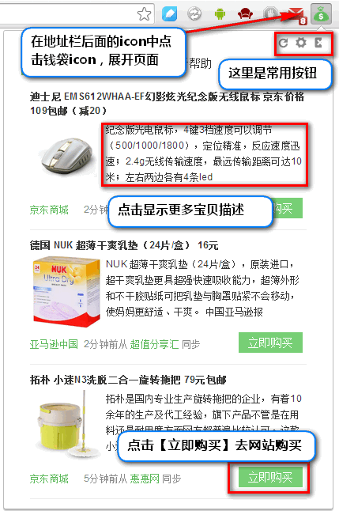

<%- include('tpl/header', {
   title:'帮助',
   css:['options','help'],
   js:[]
}); %>

<%- include('tpl/navbar', {activeNav:'help'})%>
<div class="body-wrapper">
    <div class="basic bs-docs-example">
        <p class="text-center">基本操作示意图，<a href="http://zhufu.sinaapp.com/api/demo.gif" target="_blank">查看动态演示</a></p>
        <p class="text-center"></p>

    </div>
    <h3 class="question text-warning icon-question clearfix">哇，特价商品太多了，弹窗提醒太给力，我怎么关闭它？</h3>
    <div class="answer clearfix">
        <p>是可以设置消息提醒的，而且可以选择安静时间哦~具体步骤：
            <ol>
                <li>打开【<a href="options.html">设置页面</a>】</li>
                <li>找到【是否开启桌面提醒】看下它的按钮是否关闭状态（绿色是开启状态，灰色是关闭状态哦~）</li>
                <li>弹出数量在【设置最大弹窗数量】里面也可以设置哦~</li>
            </ol>
        </p>
    </div>
    <h3 class="question text-warning icon-question clearfix">我不想再上班时间弹提醒，其他时间又想看到特价提醒，我怎么办？</h3>
    <div class="answer clearfix">
        <p>嗯，有办法！具体步骤：
            <ol>
                <li>打开【<a href="options.html">设置页面</a>】页面</li>
                <li>找到【设置安静时间段】看下它的按钮是否打开状态（绿色是开启状态，灰色是关闭状态哦~）</li>
                <li>选择安静时间就可以了，比如9:00~18:00</li>
            </ol>
        </p>
    </div>
    <h3 class="question text-warning icon-question clearfix">我要买个【豆浆机】，其他商品我不关心，只想要【豆浆机】的提醒</h3>
    <div class="answer clearfix">
        <p>嗯，有办法！具体步骤：
            <ol>
                <li>打开【<a href="options.html">设置页面</a>】页面</li>
                <li>找到【订阅打折商品关键字】输入【豆浆机】点击添加</li>
                <li>记得打开【开启关键字商品桌面提醒】的开关</li>
                <li>不想要关键字之外的提醒，按照第一条问题，关掉【是否开启桌面提醒】即可</li>
            </ol>
        </p>
        <p>
            <span class="label label-info">Hands up!</span>
            输入形如【query+商城名】的关键字可以定制特定商城的关键字哦~
        </p>
    </div>
    <h3 class="question text-warning icon-question clearfix">我错过了关键字提醒，或者想看其他关键字提醒怎么办？</h3>
    <div class="answer clearfix">
        <p>具体步骤：
            <ol>
                <li>打开【<a href="query.html">查看订阅消息</a>】页面</li>
                <li>在【输入框】输入【关键字】点击搜索</li>
            </ol>
        </p>
    </div>
</div>

<%- include('tpl/footer')%>
